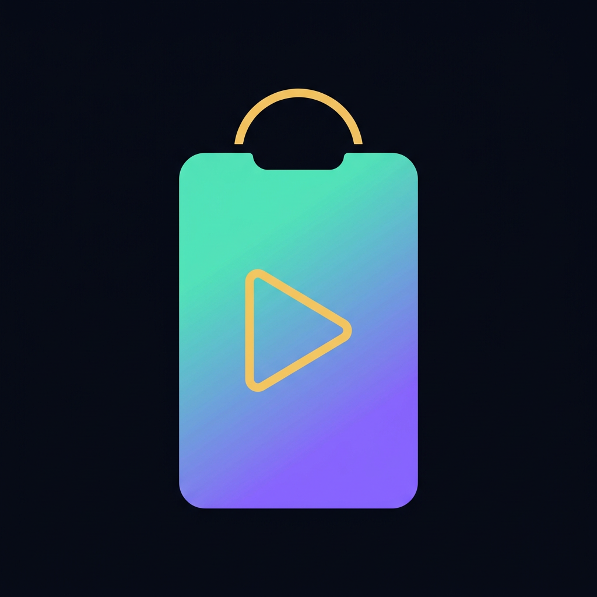
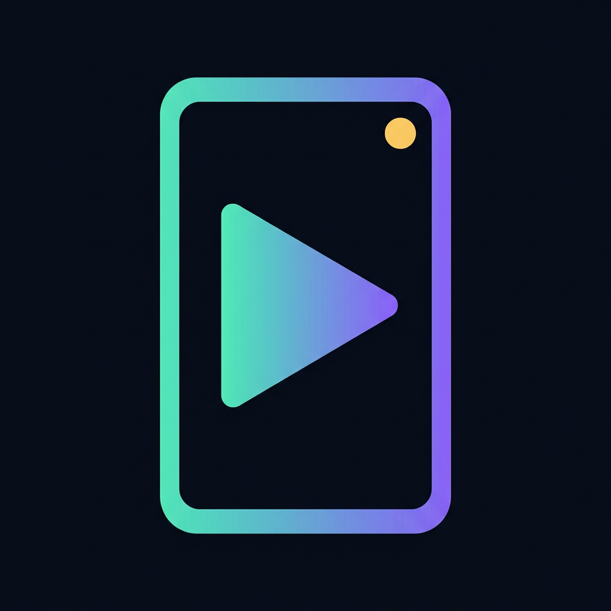
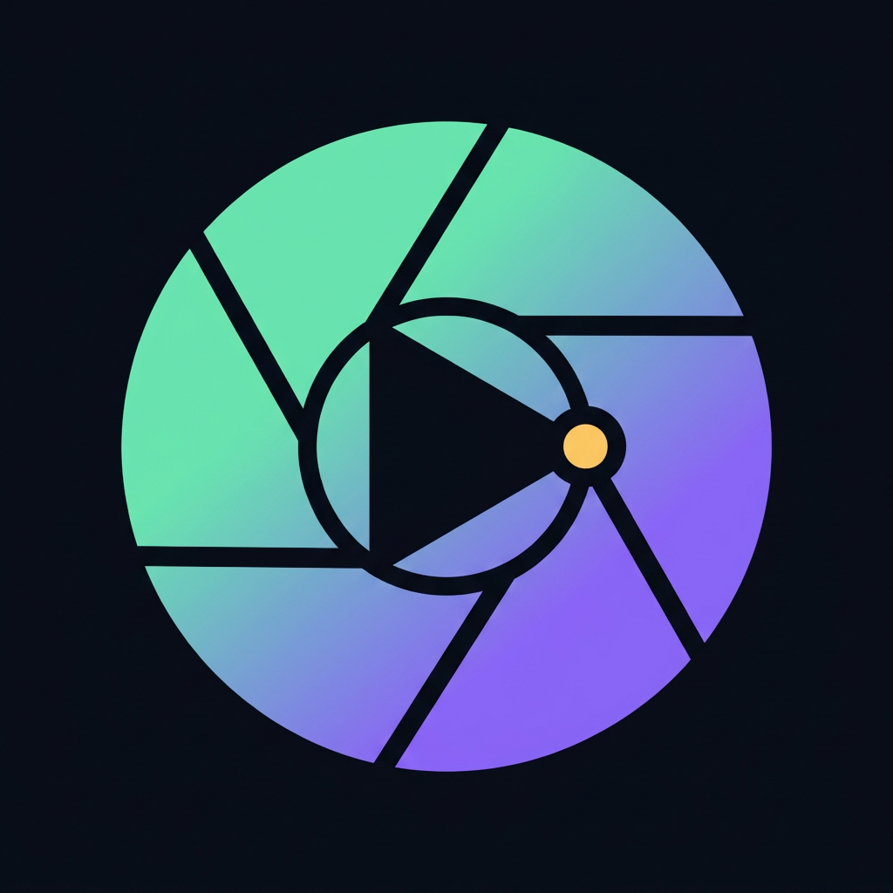
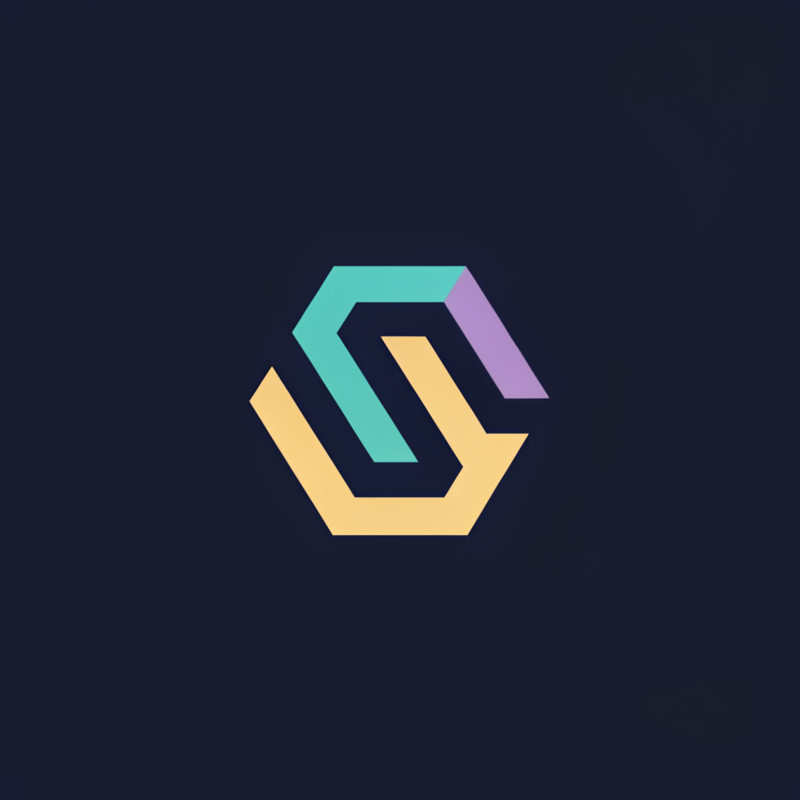
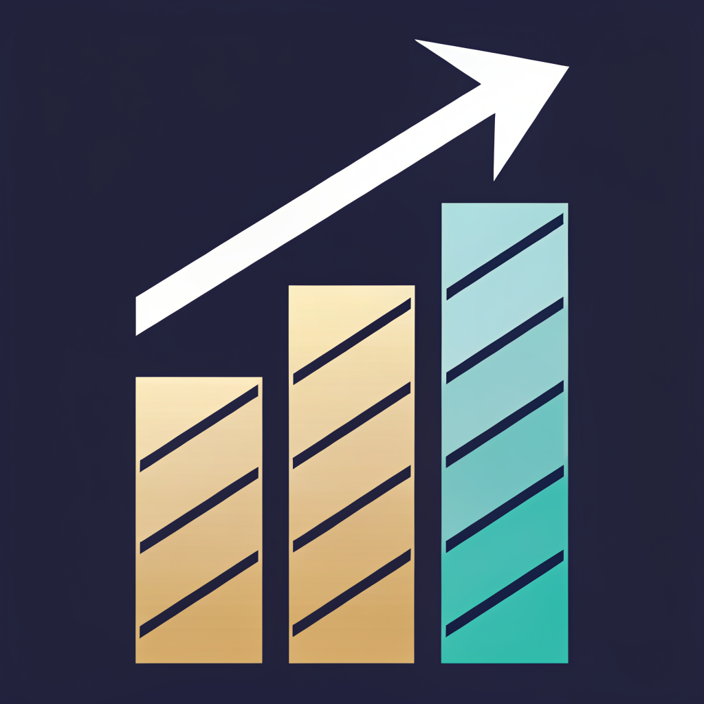
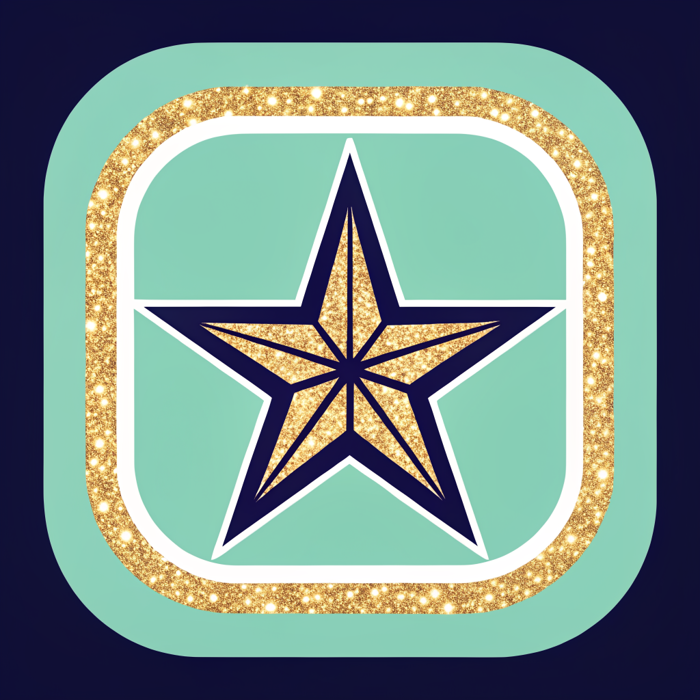

제가 손으로 짠 SVG는 임팩트가 없다는 지적이 맞았습니다. 이미지 모델로 다시 뽑았습니다.
엔진: nano-banana-pro(제미니 계열) 6종 · recraft-v3(벡터 전문) 3종. 전부 심볼만(한글은 이미지 모델이 깨뜨립니다 → 글자는 지금의 CSS 워드마크와 조합).
limit: 0 · GenerateRequestsPerDayPerProjectPerModel-FreeTier —
소진이 아니라 무료 등급엔 이미지 생성 권한이 0입니다(텍스트 모델은 정상 작동 확인).
imagen 계열은 404 신규 사용자 불가."쇼핑"과 "영상"이 한 도형에 다 들어갑니다. 면으로 꽉 차서 24px에서도 살아남습니다.

쇼핑 맥락이 약하거나, 작은 크기에서 무너지는 것들입니다.





배경·글자·메뉴는 라이브 그대로. 워드마크는 현재 적용된 민트→오로라 + 골드 마침점.